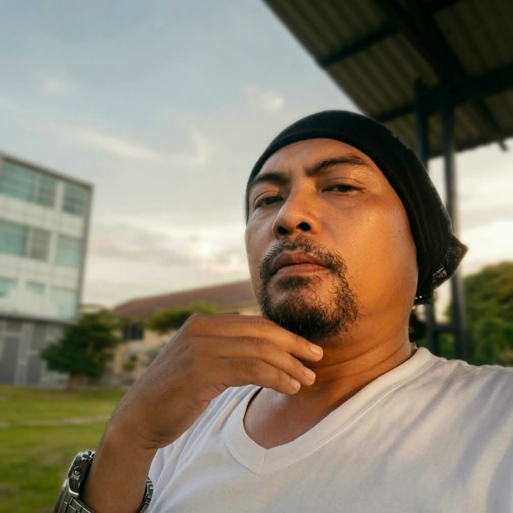
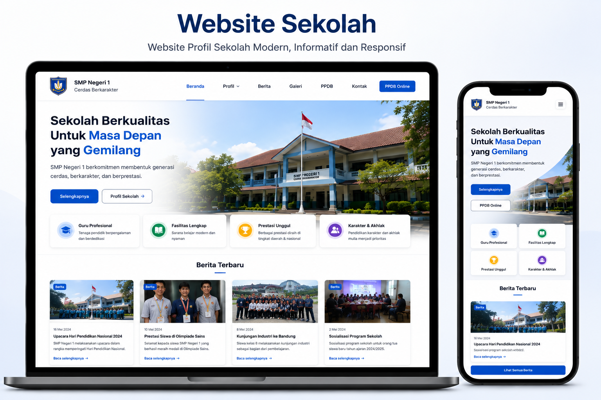
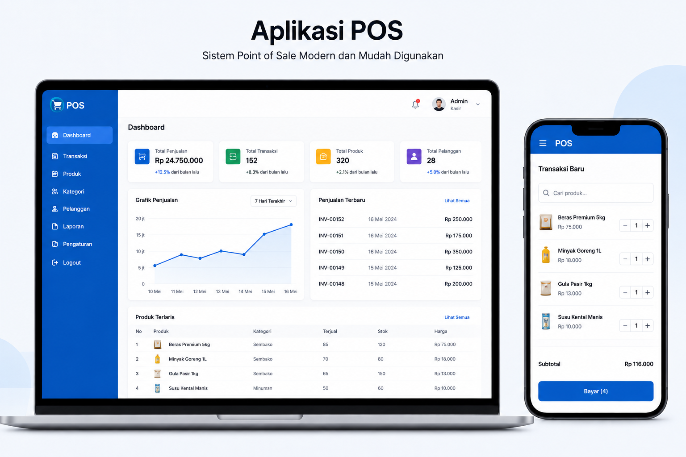
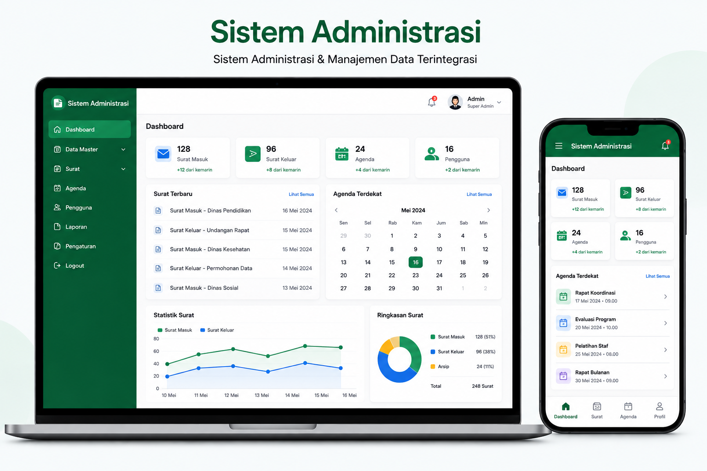

Frontend
Interface modern, responsive, accessible dan berorientasi pada pengalaman pengguna.
HTML5CSS3JavaScriptTypeScriptReactNext.js
SRILEX BUDITRA / DIGITAL SOLUTION
Srilex Buditra — Full Stack Developer Bengkulu yang membangun website profesional, aplikasi web, REST API, dan sistem informasi custom yang responsif, terstruktur, dan siap dikembangkan untuk bisnis, UMKM, perusahaan, instansi, dan organisasi di Indonesia.

SB“Full Stack. Full Solution.
Full Impact.”
Teknologi yang saya gunakan untuk membangun solusi digital sesuai kebutuhan project.
Interface modern, responsive, accessible dan berorientasi pada pengalaman pengguna.
Business logic, REST API, authentication dan integrasi layanan yang terstruktur.
Perancangan struktur data, query, relasi dan penyimpanan yang siap berkembang.
Deployment, server configuration, container, reverse proxy dan workflow development.
Solusi digital lengkap dari ide sampai deployment.
Profil bisnis profesional, cepat dan terpercaya.
Aplikasi web modern dan interaktif.
Backend dan API yang terstruktur.
Solusi sesuai proses bisnis.
Desain dan optimasi database.
Hosting, VPS dan cloud service.
Selected work & project samples. Detail scope dapat disesuaikan dengan kebutuhan project Anda.

Platform profil sekolah modern dengan sistem informasi terpadu dan pengalaman responsif.
Lihat Case Study →
Sistem kasir dan inventori berbasis web untuk membantu proses transaksi dan pengelolaan data.
Lihat Case Study →
Dashboard administrasi dengan fokus pada pengelolaan data, efisiensi dan visibilitas informasi.
Lihat Case Study →Bukan hanya tampilan — setiap project dimulai dari kebutuhan dan solusi.
Informasi sekolah perlu tampil lebih terstruktur dan mudah diakses.
Responsive interface, struktur informasi yang jelas dan komponen ringan.
Transaksi dan inventori membutuhkan alur yang lebih terorganisir.
Web app dengan frontend interaktif, backend dan database terintegrasi.
Data administrasi membutuhkan dashboard dan akses informasi yang lebih cepat.
Dashboard modern dengan struktur data yang siap dikembangkan.
Nilai yang saya bawa ke setiap project.
Solusi dibangun berdasarkan kebutuhan, alur kerja dan tujuan project.
Frontend, backend, database hingga deployment dapat ditangani dalam satu alur.
Pengalaman pengguna dirancang untuk desktop, laptop, tablet dan smartphone.
Diskusi kebutuhan dan progres lebih sederhana karena komunikasi langsung dengan developer.
Harga awal yang transparan dan dapat disesuaikan dengan scope.
Isi kebutuhan awal. Estimasi ini bersifat indikatif dan akan disesuaikan setelah scope dibahas.
Layanan: Website Company Profile
Fitur tambahan: Tidak ada
Proses kerja yang sederhana, jelas dan transparan.
Memahami ide dan tujuan project.
Menyusun kebutuhan dan scope.
Timeline, biaya dan deliverables.
Build, review dan iterasi.
Quality check dan perbaikan.
Launch dan serah terima.
Hal yang bisa Anda harapkan sebelum, selama, dan setelah project.
Kebutuhan, fitur, batasan pekerjaan, timeline dan biaya dibahas sebelum development dimulai.
Review dan komunikasi dilakukan sesuai tahapan agar arah project tetap selaras dengan kebutuhan.
Akses, source code, dokumentasi, deployment dan maintenance mengikuti kesepakatan project.
Portfolio dan studi kasus disajikan sebagai contoh kemampuan dan pendekatan, dengan detail project disesuaikan fakta yang tersedia.
Jawaban singkat untuk pertanyaan yang sering muncul.
Menyesuaikan scope dan kompleksitas. Timeline dibahas setelah kebutuhan utama dipetakan.
Bisa. Fitur, alur dan integrasi dapat dirancang berdasarkan kebutuhan project dan anggaran.
Ketentuan source code, akses dan handover dibahas di proposal serta kesepakatan project.
Dapat ditambahkan sebagai bagian dari deployment sesuai kebutuhan.
Bisa, dengan skema support atau maintenance yang disepakati berdasarkan kebutuhan.
Ya. Tampilan dirancang responsive untuk desktop, tablet, dan smartphone, dengan perhatian pada struktur konten, aksesibilitas dasar, dan performa.
Fondasi SEO teknis dasar dapat mencakup title, description, canonical, struktur heading, metadata sosial, sitemap, robots.txt, dan structured data. SEO lanjutan mengikuti scope project.
Konsultasikan kebutuhan Anda langsung dengan Srilex Buditra.